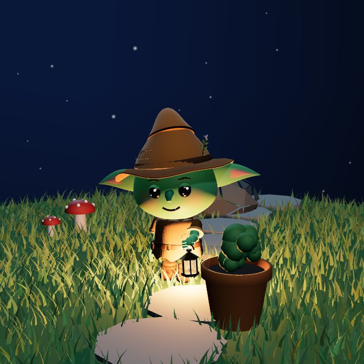

Une chose faite, un arrosoir. Tu le verses sur la plante de ton choix : elle passe ses stades.
Une chose faite sur deux en ouvre une. Tape pour retourner.
La serre suit ton heure réelle. Glisse.

18 h22 hTrois graines dorées sont cachées sur cette page.
Sans compte. Hors ligne. Gratuit.
« Allez. Moi je reste ici avec les pots. »